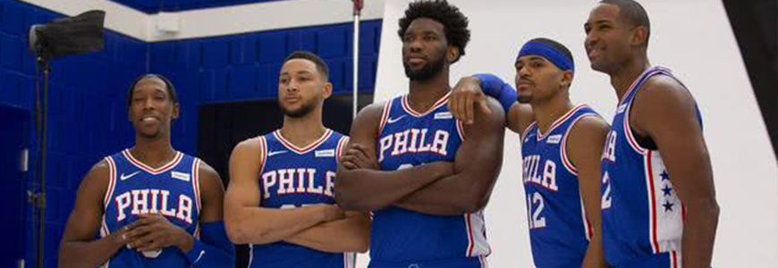

- 


<
>
- 1
- 2
- 3
- 4
- 5


1990年5月2日出生于加州棕榈谷，美国职业篮球运动员，司职小前锋，现效力于NBA印第安纳步行者队。 2010年NBA选秀，保罗·乔治第一轮第十顺位被印第安纳步行者队选中。2012-13赛季，保罗·乔治获NBA常规赛"最快进步队员"奖。2014年1月24日，保罗·乔治生涯第一次入选全明星首发。2014年7月，保罗·乔治参加美国拉斯维加斯男篮迷你训练营，备战2014年西班牙篮球世界杯。8月2日，在一场国家队队内对抗赛中。保罗·乔治右小腿严重骨折，导致2014-15赛季报销。2015年4月6日，保罗·乔治正式复出。2016年1月22日，保罗·乔治以711,595票入围2016年NBA全明星赛东部首发阵容，这是他第3次入选全明星，第2次担任首发。 2018年7月1日，保罗-乔治续约雷霆。